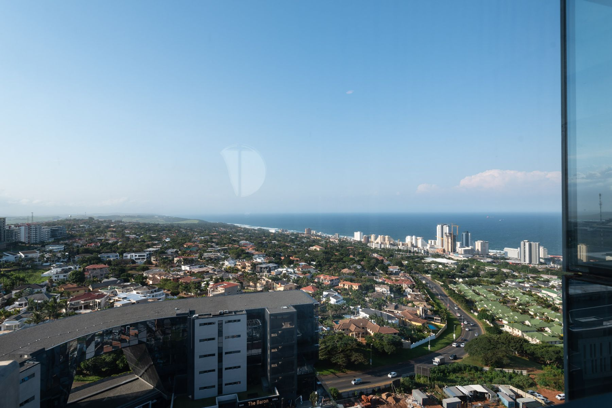

Umhlanga Promenade & Lighthouse
Walk or jog the paved promenade that runs along the beachfront past the famous red-and-white Umhlanga Lighthouse. It’s at its best at sunrise, when the sun comes up straight out of the Indian Ocean.

Our favourite ways to spend your days while staying at The Arch, from the beach on your doorstep to safaris further afield.
Walk or jog the paved promenade that runs along the beachfront past the famous red-and-white Umhlanga Lighthouse. It’s at its best at sunrise, when the sun comes up straight out of the Indian Ocean.
A short stroll along the promenade brings you to the pier, shaped like a whale’s skeleton, for some of the best photos on the coast.
Golden sand and warm water most of the year, with lifeguards on duty and shark nets protecting the main bathing areas. Always swim between the flags.
An easy trail and boardwalk through coastal dune forest to the lagoon mouth and an often-empty stretch of beach. Look out for birds, monkeys and the odd duiker.
Start (or end) your evening with a drink and sweeping views over the coastline, without even leaving the building.
Dress up for a night out at The Baron, or grab a coffee by the cobbled fountain square and browse the shops downstairs.
The village centre is packed with restaurants, cafés and cocktail bars, from relaxed breakfast spots to fine dining with sea views.
This landmark hotel beside the lighthouse is famous for its afternoon tea and its curry buffet, a true Durban institution.
One of the biggest shopping centres in the southern hemisphere, with hundreds of shops, cinemas and restaurants.
Restaurants, shows and a casino set in Zulu-inspired architecture just up the coast.
Tee off at nearby courses including Mount Edgecombe Country Club and the famous Durban Country Club.
Find out about sharks and the region’s shark-safety work with presentations and, on selected mornings, boat trips to see the nets. Check their website for times.
Africa’s largest aquarium, with a water park, marine shows and a shipwreck to explore. A guaranteed hit with children.
Ride the SkyCar to the top of the stadium arch for 360° views of Durban, then walk or cycle along the beachfront promenade.
Rolling hills, craft markets, Zulu cultural experiences and country restaurants inland from Durban.
Quieter beaches, rock pools and seaside restaurants up the North Coast, with dolphins often spotted offshore.
Africa’s oldest proclaimed game reserve and home of the Big Five. Go for a long weekend, or join a guided day tour from Umhlanga.
Two sea-view apartments, minutes from everything on this list.